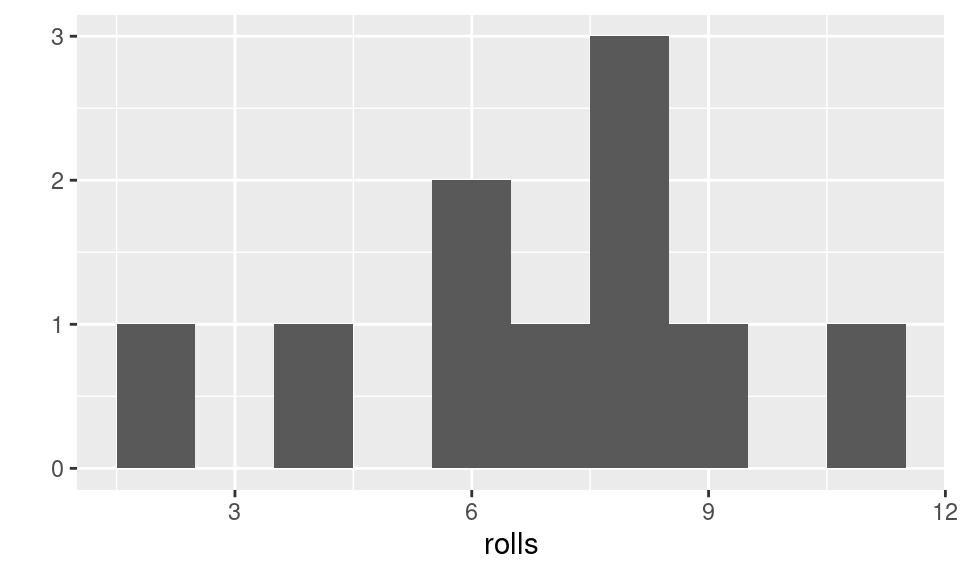

In this lab you will use the function you built at the end of Chapter 2 of Hands on Programming in R, to explore the chance of winning big in Vegas. This is the function you built:
roll2 <- function(bones = 1:6) {
dice <- sample(bones, size = 2, replace = TRUE)
sum(dice)
}Recall that roll2() simulates rolling two dice and adding the outcomes. For example, if roll2() simulates a roll of three on the first die, and two on the second, it will return a 5.
roll2() your dice! Run roll2() in code box below:
roll2()"Nice, you are on a roll ;)"Did you get a lucky seven? How often does a lucky seven come up? We could calculate the answer exactly, but instead you’ll use a simulation to estimate the probability of rolling a seven.
Okay, time for more fun. How about we roll our pair of dice 10 times, and check out the results?
The replicate() function is designed to make it easy to repeatedly run code. The second argument is the code to run, the first argument is how many times you’d like to re-run it.
For example, you could re-run the code 1 + 3, five times with:
replicate(5, 1 + 3)## [1] 4 4 4 4 4The result is a vector with the five repeated results: not surprisingly it’s 4 every time.
To re-roll your die 10 times, you could run:
replicate(10, roll2())## [1] 8 5 9 5 6 5 4 8 11 12You’ll want to save these rolls to investigate them, so let’s store the results in an object called rolls:
rolls <- replicate(10, roll2()) # Roll the dice 10 times!
rolls # Show the results, stored in the "rolls" vector## [1] 7 8 4 6 8 8 2 6 11 9It is not very helpful to look at the results directly, especially if we start replicating a large number of rolls. A histogram of the results will give us a better idea of the distribution of the rolls.
We will use the function qplot() from the ggplot2 package for plotting throughout the quarter. If you pass qplot() a single vector, it will create a histogram of the values in the vector:
qplot(rolls, binwidth = 1) # Histogram of our roll outcomes
You might like to try this a few times: roll the dice ten times, and make a histogram of the outcome.rolls <- replicate(10, roll2())
qplot(rolls, binwidth = 1, ylab = "Frequency", xlim = c(2, 12))You’ll get different results every time you run this code, it’s random after all!
The true probability distribution for this dice rolling game is given in Figure 2.8 of OpenIntro Statistics, 3rd Ed., on page 83 (you can download the figure here). How similar does yours look to Figure 2.8? Probably not too similar! You’ll be able to match Figure 2.8 a lot better by increasing the number of replications. Edit the code below to try 50 rolls, 100 rolls, 1000 rolls, and 10000 rolls.rolls <- replicate(10, roll2())
qplot(rolls, binwidth = 1, ylab = "Frequency", xlim = c(2, 12))Hint: The first argument to replicate() controls how many repeations are conducted, change the 10 to something bigger.
How many rolls do you need before the plot doesn’t change much if you re-run the code?
To estimate the probability of a lucky seven, we need a way to count the number of 7s in our rolls vector. To do this, we will use a logical operator.
The logical operator == tests for equality — for each element, if the value of the left hand side is equal to that on the right hand side it returns TRUE, otherwise it returns FALSE. For example, with this smaller vector fake_rolls:
fake_rolls <- c(2, 4, 7, 7, 6, 12)we can ask if the values are equal to 7:
fake_rolls == 7## [1] FALSE FALSE TRUE TRUE FALSE FALSEThere is TRUE in the 3rd and 4th elements because the 3rd and 4th elements in fake_rolls are 7.
When logical vectors are passed to functions that expect numeric values TRUEs get treated as 1 and FALSEs as 0. For example, if we pass a logical vector to sum() we’ll get back the number of elements that were TRUE:
sum(fake_rolls == 7)## [1] 2fake_rolls had two sevens in it. To convert this to a proportion we can divide by the length of the vector:
sum(fake_rolls == 7) / length(fake_rolls)## [1] 0.3333333Or, even more concisely use the mean() function with the logical vector:
mean(fake_rolls == 7)## [1] 0.3333333mean() of the logical vector comparing each roll to 7:
rolls <- replicate(10000, roll2())
mean(rolls == 7)How close is the value to the true probability of 1/6? You might run the code again and see how much your estimate changes. How could you get an even closer estimate?
The operator, == (you can read as “is equal to”, or simply “equals”), is a specific kind of comparison. Other comparisons include:
| Operator | Meaning |
|---|---|
< |
less than |
> |
greater than |
<= |
less than or equal to |
>= |
greater than or equal to |
!= |
not equal to |
Recall our small vector of fake_rolls:
fake_rolls## [1] 2 4 7 7 6 12We could ask if values in fake_rolls are greater than 3:
fake_rolls > 3## [1] FALSE TRUE TRUE TRUE TRUE TRUEOr if values in fake_rolls are less than or equal to than 6:
fake_rolls <= 6## [1] TRUE TRUE FALSE FALSE TRUE FALSEYou can combine logical statements with & for AND, or | for OR. So, if you wanted to know if values in fake_rolls are greater than 3 and less than or equal to than 6, you could do:
fake_rolls > 3 & fake_rolls <= 6## [1] FALSE TRUE FALSE FALSE TRUE FALSEfake_rolls are: * less than 3 or, * not equal to 6.
fake_rolls > 3 & fake_rolls <= 6fake_rolls < 3 | fake_rolls != 6You’ve already seen one use of logical vectors: to count. Another use is to extract values that meet a certain criteria. You’ve seen how to ask if the values of fake_rolls are greater than 3:
fake_rolls > 3## [1] FALSE TRUE TRUE TRUE TRUE TRUETo extract the value of fake_rolls where this is TRUE, you use square bracket subsetting, but pass in the logical vector:
fake_rolls[fake_rolls > 3]## [1] 4 7 7 6 12In words you might read this as: “extract the elements of fake_rolls, where the value of fake_rolls is greater than 3”.
fake_rolls that are not equal to 6:
fake_rolls[fake_rolls > 3]fake_rolls[fake_rolls != 6]To summarize, in this lab you’ve seen:
replicate() functionqplot()x == 7.sum(), e.g. sum(x == 7).[, e.g. x[x == 7].